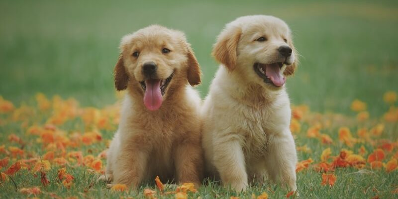

The Golden Retriever

The Golden Retriever is a sturdy, muscular dog of medium size, famous for the dense, lustrous coat of gold that gives the breed its name. The broad head, with its friendly and intelligent eyes, short ears, and straight muzzle, is a breed hallmark. In motion, Goldens move with a smooth, powerful gait, and the feathery tail is carried, as breed fanciers say, with a “merry action.”
The most complete records of the development of the Golden Retriever are included in the record books that were kept from 1835 until about 1890 by the gamekeepers at the Guisachan (pronounced Gooeesicun) estate of Lord Tweedmouth at Inverness-Shire, Scotland. These records were released to public notice in Country Life in 1952, when Lord Tweedmouth’s great-nephew, the sixth Earl of Ilchester, historian and sportsman, published material that had been left by his ancestor. They provided factual confirmation to the stories that had been handed down through generations. Goldens are outgoing, trustworthy, and eager-to-please family dogs, and relatively easy to train. They take a joyous and playful approach to life and maintain this puppyish behavior into adulthood. These energetic, powerful gundogs enjoy outdoor play. For a breed built to retrieve waterfowl for hours on end, swimming and fetching are natural pastimes.
The Golden Retriever is one of the most popular dog breeds in the U.S. The breed’s friendly, tolerant attitude makes them fabulous family pets, and their intelligence makes them highly capable working dogs. Golden Retrievers excel at retrieving game for hunters, tracking, sniffing out contraband for law enforcement, and as therapy and assistance dogs. They’re also natural athletes and do well in dog sports such as agility and competitive obedience.
These dogs are fairly easy to train and get along in just about any home or family. They’re great with kids and very protective of their humans. If you want a loyal, loving, and intelligent companion, consider adopting one of these pups into your pack. DogTime recommends this dog bed to give a good night’s sleep to your medium-sized Golden. You should also pick up this dog de-shedder for your high shedding pup!